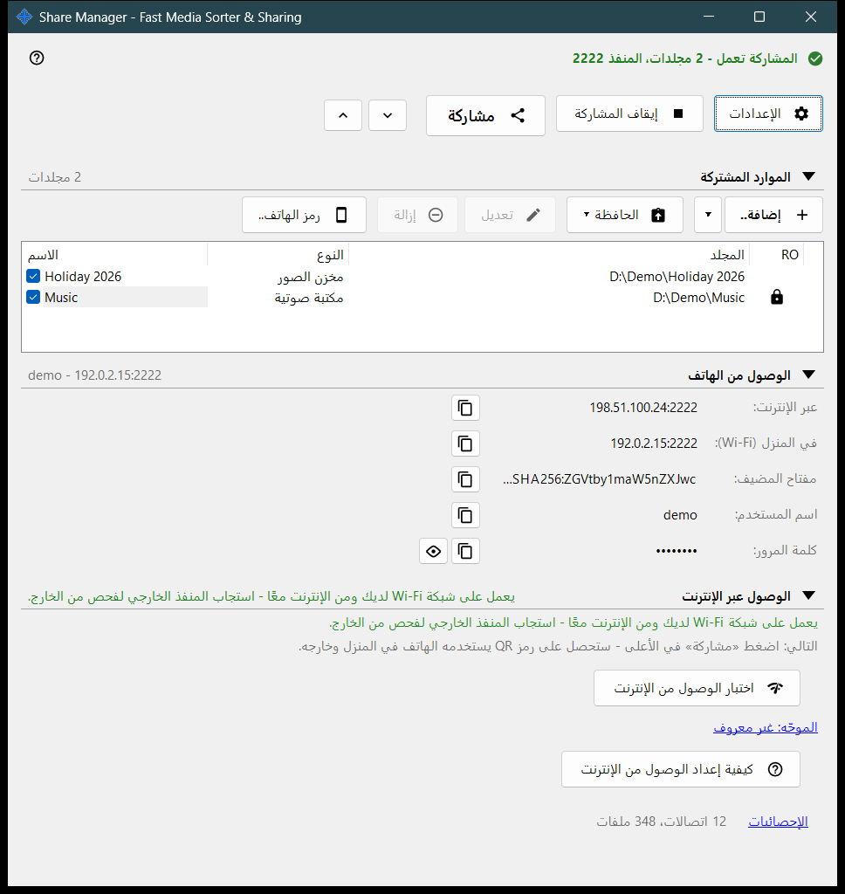
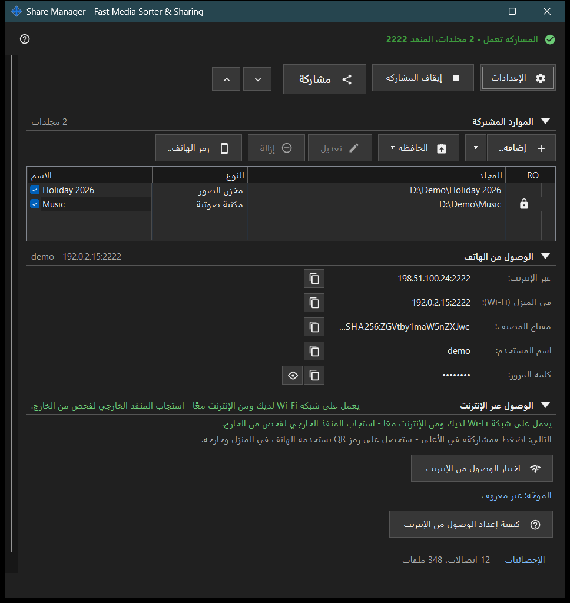

Share Manager - Fast Media Sorter & Sharing
الغرض من هذه النافذة
النافذة الرئيسية لـ Share Manager: خدمة محلية للمشاركة تنفّذ أيضًا عمليات الملفات المجدولة. تسرد المجلدات التي يشاركها هذا الكمبيوتر مع الهاتف عبر SFTP، وتبدأ المشاركة وتوقفها، وتُصدر رمز الوصول، وتُظهر كيف يصل الهاتف إلى الكمبيوتر. وتعمل عمليات الملفات المجدولة أيضًا دون مشاركة المجلدات: لها نافذتها الخاصة التي تُفتح من قائمة أيقونة منطقة الإشعارات أو من قائمة مجلد العارض، وللعمليات المجدولة وحساب التبادل صفحاتهما أيضًا في إعدادات المدير. تُفتح من العارض أو من أيقونة منطقة الإشعارات؛ وإغلاق النافذة يُبقي التطبيق في منطقة الإشعارات.


بهذا الترتيب
- اضغط إضافة.. واختر مجلد.. لإضافة مجلد إلى القائمة.
- ضع علامة على المجلد: المجلدات المحدّدة هي التي تُقدَّم.
- اضغط بدء المشاركة (يلزم مجلد واحد محدّد على الأقل).
- اضغط مشاركة للحصول على رمز QR أو ملف .fmscfg للهاتف.
- للوصول من خارج شبكتك المنزلية افتح مجموعة الوصول عبر الإنترنت واستخدم زرّيها.
- اضغط إيقاف المشاركة عند الانتهاء.
عناصر النافذة
الصف العلوي
الإعدادات يفتح إعدادات المدير. بدء المشاركة يتحول إلى إيقاف المشاركة أثناء عمل الخادم. مشاركة يفتح معالج رمز الوصول ويعمل فقط والمشاركة قيد التشغيل؛ وإلا يطلب التلميح تشغيل الخادم أولاً. توسيع الكل وطي الكل يفتحان المجموعات أدناه أو يغلقانها.
الموارد المشاركة
صف واحد لكل مورد مع خانة اختيار والأعمدة الاسم والنوع والمجلد. الصف المحدّد يُقدَّم للهواتف؛ والقائمة الفارغة تعرض أضف المورد الأول.. وعند إلغاء تحديد آخر مجلد محدّد تسأل النافذة هل تُوقَف المشاركة، لأن الهواتف المتصلة ستُفصَل. بدء المشاركة دون تحديد أي مجلد يعرض فقط التلميح أضف مجلدًا أولاً وحدّده بعلامة.
الوصول من الهاتف
بيانات الاتصال التي يحتاجها الهاتف أو أي عميل SFTP: العنوان عبر الإنترنت وفي المنزل (Wi-Fi) وعنوان IPv6 ومفتاح المضيف واسم المستخدم وكلمة المرور. إظهار كلمة المرور يكشفها وإخفاء كلمة المرور يغطيها من جديد. النص أسفل المجموعة يوضح هل يصل الهاتف إلى الكمبيوتر في المنزل فقط أم من الخارج أيضاً.
الوصول عبر الإنترنت
اختبار الوصول من الإنترنت يفتح نافذة اختبار الوصول عبر الإنترنت. كيفية إعداد الوصول من الإنترنت يفتح دليل الموجّه. الرابط الموجّه: .. يفتح صفحة الموجّه نفسها؛ ويُكتب الموجّه: غير معروف عندما لا يُعثر على موجّه. تحمل المجموعة تحذيراً: كل من يعرف العنوان واسم المستخدم وكلمة المرور يستطيع الوصول إلى كل مجلد مشترك، لذا لا تنشر رمز QR ولا ملف .fmscfg وأوقف المشاركة عند الانتهاء.
الإحصائيات
أسفل المجموعات يوجد رابط الإحصائيات بجوار ملخص قصير مثل N اتصالات، M ملفات. يفتح الرابط نافذة حالة المشاركة بالعدادات الكاملة.
عندما تكون وظائف الخادم متوقفة
إلى أن يُفعَّل مكوّن الخادم تعرض النافذة وظائف الخادم متوقفة والزر تفعيل وظائف الخادم..، الذي يفتح نافذة تفعيل مشاركة المجلدات. وإذا كان مكوّن المشاركة غير موجود في التثبيت، تذكر النافذة ذلك وتطلب إعادة تثبيت التطبيق.